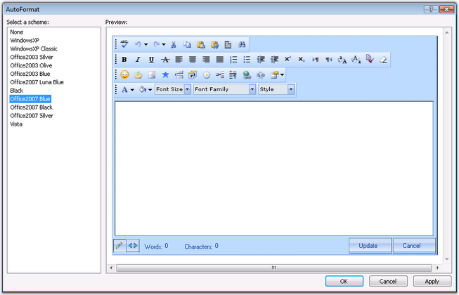
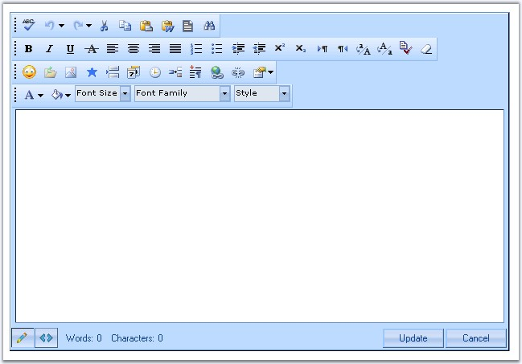
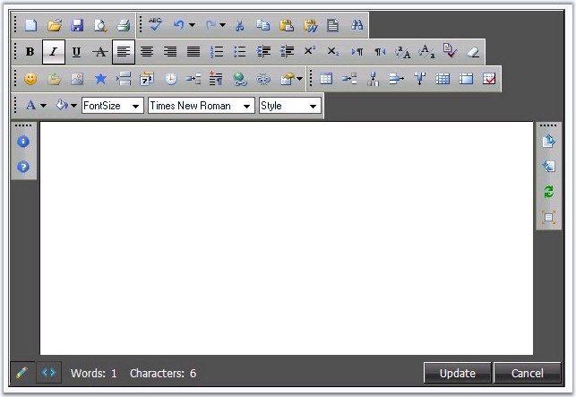
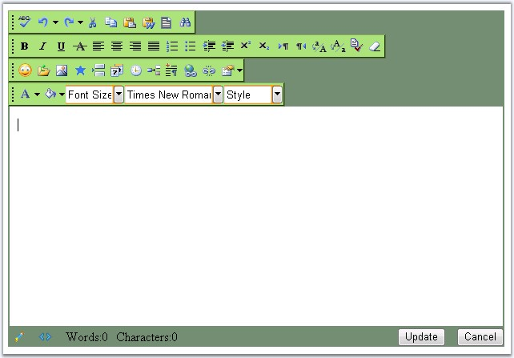

This section discusses the style and appearance settings that easily allows to customize and enhance the look and feel of the control, in the following topics.
The RichTextEditor control provides pre-defined set of styles that can be applied to your control just by the click of the button.
Right-clicking the control and selecting the 'Auto Format...' option opens the following Auto Format dialog box.

Figure 82
The left pane lists the various pre-defined style scheme that are available. The right pane shows the preview of the currently selected scheme. Select the required style and click OK to apply the selected scheme to the control.
Example of a popular look and feel
The following image shows the RichTextEditor with OfficeXP Blue style setting.

Figure 83
The new built-in format skin added for RichTextEditor is as follows.
· Black

Figure 84
If the built-in AutoFormat styles won't suffice, you can use custom CSS styles on different portions of the control. Setting the CSS styles to the respective style properties applies those settings to the corresponding segments, thus enabling to design a rich customizable appearance interface.
The various CSS style properties included are as follows.
|
Property |
Description |
|
GenericDropDownPopupRootCSSClass |
Specifies the name of the css definition to apply to the dropdown section of the generic dropdown control. |
|
GenericDropDownRootCSSClass |
Specifies the name of the css definition to apply to the textbox of the dropdown. |
|
MenuRootCSSClass |
Specifies the name of the css definition to apply to the menus. |
|
RootCSSClass |
Specifies the name of the css definition to apply to the panel of the editor control. |
|
ToolbarRootCSSClass |
Specifies the name of the css definition to apply to the toolbars. |

Figure 85: RTE with css styles applied to various sections of the control
Background and border is set for the toolbars and back color is changed for the control.
Here are the steps involves in defining custom css styles and applying them on to the different portions of the control.
1. Add a stylesheet to the application and add the required styles to be applied to various segments of the editor control.
|
[StyleSheet]
.PopupRoot { border:solid 2px #89c9f0; outline:Blue outset 2px; } .Root { background-color:#ff9900; } .RootCss { background-color:#718d76 } .ToolBar { background-color:#ade079; border-style:outset; border-color:#ade079; border-width:2px; } .Menu { background-color:Red; border:solid 2px Red; } |
2. The style reference tag should be added to within the header tag of the page.
|
<link href="StyleSheet.css" type="text/css" rel="stylesheet" /> |
3. Associate the defined styles in your style sheet with the control's different portions by setting the corresponding properties, as follows.
|
[aspx]
<cc1:RichTextEditor ID="RichTextEditor1" runat="server" GenericDropDownPopupRootCSSClass="PopupRoot" GenericDropDownRootCSSClass="Root" MenuRootCSSClass="Menu" RootCSSClass="RootCss" ToolBarRootCSSClass="ToolBar"/> |
See Also